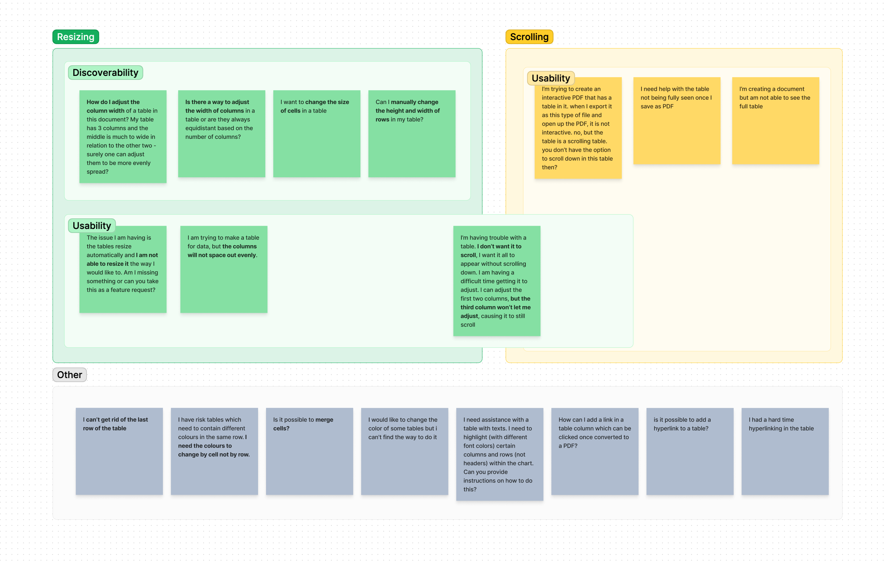

Venngage is a graphic design tool that specializes in infographics
Venngage is a web-based SaaS graphic design tool. Many of Venngage’s core users use the tool to create documents like infographics, reports, presentations, and diagrams to aid communication at work.
Many of these designs feature data, visualized in charts and tables. Users often cite Venngage’s data visualization capabilities as a key reason they choose Venngage over similar competitors. With that in mind, we want to ensure that our data-focused templates are as easy to edit as possible.
An example of a Venngage report template featuring a table widget.
The pain points
The existing table widget was confusing and tedious to edit
I performed a customer support analysis, collected observations from a contextual inquiry, and performed my own usability evaluation to come up with the following key pain points.

Observations and user complaints regarding the old table widget
Resizing:
Users were limited by the cell content and the widget size when resizing, making it tedious to adjust a table to fit their content and the canvas. Users often had to go back and forth between resizing the widget and resizing the columns to get to their desired result.
Users struggled to discover how to resize columns. The affordance was subtle (just a change to the cursor) and resizing was only available while hovering over the header row dividers.
Scrolling:
The table was scrollable if the content overflowed the height of the widget, but only when sharing designs via Venngage link - not in PDF downloads that most people used. Users didn’t realize this until they downloaded, then would have to go back and fix their design and re-download.
It wasn’t clear to all users that parts of the table were hidden in a scrollable area, or how to adjust the table to prevent scrolling.
Small editing area not optimal for much content:
Table widgets were edited via a separate data table in a right menu. When tables had many columns or lots of content in a cell, the limited screen space made it difficult (and sometimes impossible) to select cells in the right menu and see the edits on the canvas
A gif showing table editing with the original table widget.
The solution
Select and view the table directly on canvas:
A WYSIWYG table. Consistent with a basic text widget, text is edited directly on the canvas, and cells can be selected and styled via an in-context toolbar.
Updated resizing behaviour and affordances:
Users can hover over any part of a column divider to resize. There’s a clear affordance to indicate that resizing is available.
Resizing the widget impacts all columns proportionally.
Resizing one column divider impacts the size of only the column to the left of that divider. The widget size adjusts in response.
Text characters wrap onto new lines, so the user can freely resize regardless of content
A gif showing table editing with the new table widget, with editing options in an in-context toolbar.
The next steps
In the first slice of this project, we reused existing patterns (buttons in the in-context toolbar and in a right-click context menu) to surface options for adding and deleting rows and columns to the user. Since these approaches were consistent with common spreadsheet tools and didn't require any new, complex UI, we decided they'd be sufficient for a v1 and quick to build.
The context menu shown on right-click of a table cell.
Through usability testing we observed that these actions are used very frequently during a typical table editing flow. Because of this, we think it's worthwhile to remove some friction in this flow by adding some affordances directly on the canvas to: